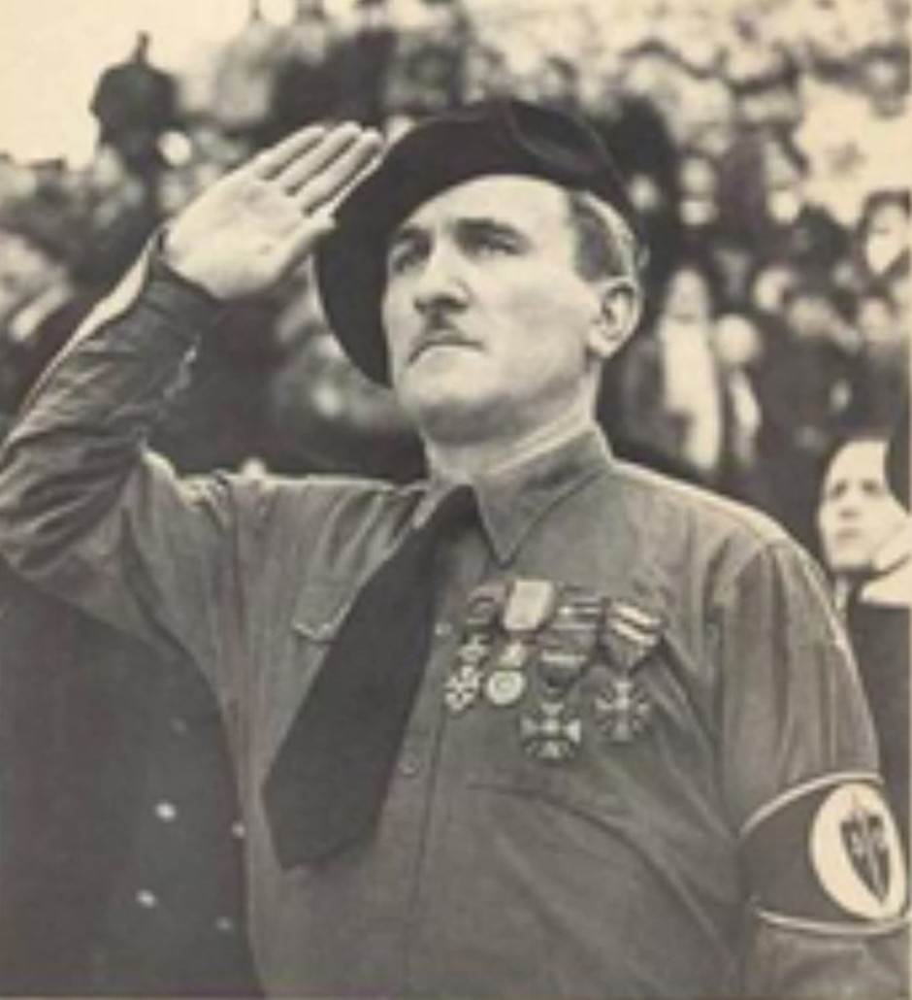

Portrait de Joseph Darnand : visage dur, cheveux courts militaires, regard sévère, tenue stricte.
Nom : Joseph Darnand
Dates : 19 mars 1897 – 10 octobre 1945
Origine : Coligny (Ain)
Fonction : Chef de la Milice française – Collaborateur du régime de Vichy
Darnand dans les années 1940 : posture rigide, expression autoritaire, style militaire.
Ancien combattant décoré de la Première Guerre mondiale, Joseph Darnand devient dans les années 1940 l’une des figures les plus radicales de la collaboration française. Nationaliste et farouchement anticommuniste, il glisse vers un engagement fasciste assumé.
Son parcours le mène naturellement vers le régime de Vichy, où il trouve un espace pour imposer ses idées autoritaires et violentes.
Photographie d’époque : Darnand, figure centrale de la Milice, organisation paramilitaire de Vichy.
En 1943, Darnand fonde et dirige la Milice française, force paramilitaire chargée de traquer les résistants, les réfractaires au STO et les opposants au régime.
La Milice devient rapidement synonyme de terreur intérieure : arrestations, tortures, exécutions sommaires, participation aux rafles et répression dans les campagnes.
Darnand prête serment à Hitler et devient officier de la Waffen‑SS, symbole de son alignement total.
Darnand prête personnellement serment à Hitler et obtient un grade dans la Waffen‑SS. Il coopère directement avec la Gestapo pour démanteler les réseaux de Résistance.
Son engagement dépasse la simple collaboration politique : il incarne la collaboration armée, violente, idéologique.
Sous son autorité, la Milice participe à des exécutions, tortures, déportations et opérations de répression contre les maquis. Darnand porte une responsabilité directe dans ces violences.
Arrêté à la Libération, Darnand est jugé pour trahison et crimes contre la nation. Son procès met en lumière l’étendue de son rôle dans la collaboration armée.
Condamné à mort, il est fusillé le 10 octobre 1945.
Joseph Darnand est considéré comme l’une des figures les plus violentes et radicales de la collaboration française. Son nom reste associé à la Milice et à la terreur intérieure.